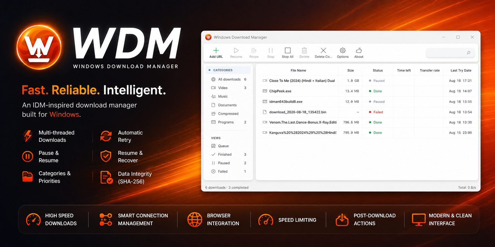
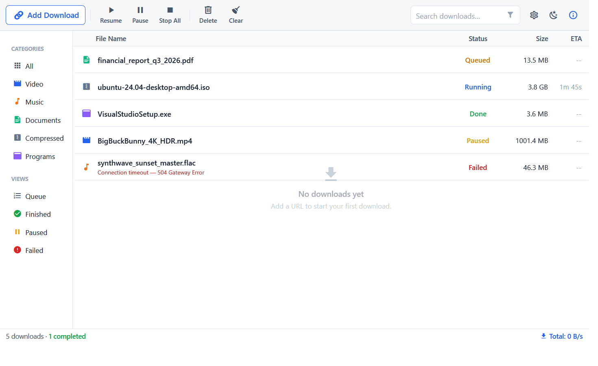
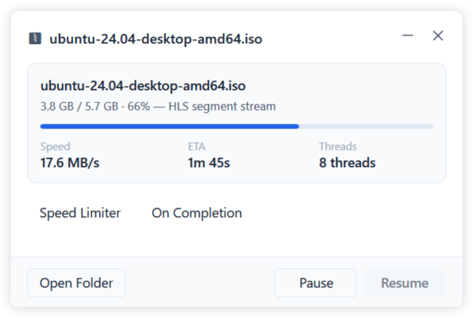

IDM-inspired, no-nonsense. 32 parallel connections with dynamic chunk pooling, browser catching on 127.0.0.1:17530, YouTube/HLS via yt-dlp, and pause/resume that survives reboots.



127.0.0.1:17530/downloadSelf-contained .NET 8 — exe bundles all libs, no runtime install.
File → 128 KiB–16 MiB chunks. Shared counter hands next chunk to any idle worker. No straggler.
Bitmap flushed to *.wdmstate next to target. Resume skips done chunks, even after reboot.
Transient + HTTP 408/429/5xx with exponential backoff.
MV3 extension cancels browser download, forwards URL/headers/cookies to 127.0.0.1:17530.
yt-dlp + FFmpeg. 4K / audio-only, playlists, AES-128, TS/fMP4, 8 concurrent segments. WebView2 sign-in.
Global/per-task speed, priorities, categories, SHA-256, post-script.
HEAD → ranged GET bytes=0-0 to learn size & range support.total/ (chunks×8) clamped 128 KiB–16 MiB. Shared counter.Range: bytes=from-to → preallocated file at offset; bitmap → *.wdmstate..m3u8 → HlsDownloader.Full gallery screenshots/README.md • Click to enlarge
MV3 service worker on chrome.downloads.onCreated → fetch cookies/headers → POST 127.0.0.1:17530/download. Unpacked loopback bridge (%LOCALAPPDATA%\WDM\BrowserExtension) — no NativeMessaging registry, auditable JS.
chrome://extensions → Developer mode → Load unpacked → %LOCALAPPDATA%\WDM\BrowserExtensionabout:debugging → Load Temporary Add-on → firefox/manifest.json • AMO signed build also availabletasks.json / engines\. Check Releases for *.nupkg + RELEASES. Delta ~2 MB, ApplyUpdatesAndRestart no wizard.dotnet tool install -g vpk
dotnet publish src/WDM/WDM.csproj -c Release -r win-x64 --self-contained -o publish
vpk pack --packId WDM --packVersion 2.6.1 --packDir publish --mainExe WDM.exeISCC.exe src\WDM.Setup\installer.iss → output\WDM_Setup_<ver>.exe. Launches minimized via /minimized on startup.